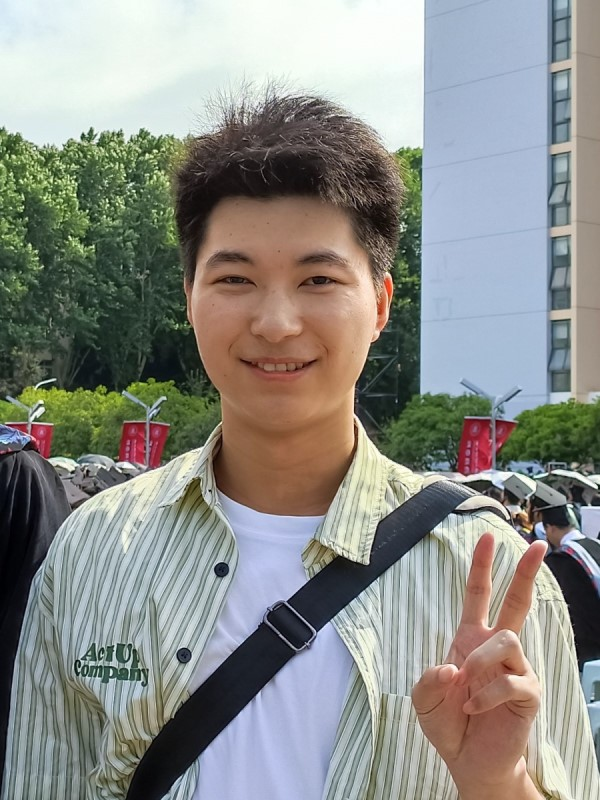
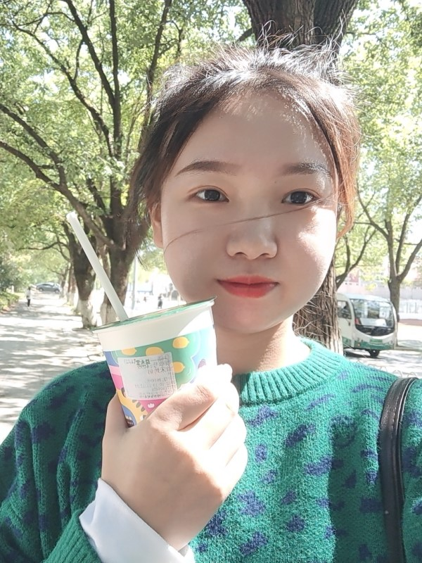

Zhou Xionghui
A super good teacher who loves scientific research, is amiable, considerate, caring for students, modest, patient, handsome, humorous and generous.
- Position: Associate professor
- College: Information College of Huazhong Agricultural University
- Research: Cancer system biology

Xie Kuan
A sunny boy who looks very serious and cold, but is actually very funny and likes to participate in various activities.
- Position: Postgraduate
- College: Information College of Huazhong Agricultural University
- Research: Cancer information machine learning

Wang Yunze
A pillar of the laboratory with the temperament of a big brother. He is the strong shield of the laboratory.
- Position: Postgraduate
- College: Information College of Huazhong Agricultural University
- Research: Cancer system biology
Hou Yuying
The rising star of the laboratory has placed the high hopes of the seniors. A big man who is obsessed with learning and can't extricate himself.
- Position: Postgraduate
- College: Information College of Huazhong Agricultural University
- Research: Cancer system biology

Ma Ronghui
A gentle, beautiful and generous student who likes to bask in the sun, walk and read papers. And her style is also very good.
- Position: Postgraduate
- College: Information College of Huazhong Agricultural University
- Research: Systematic learning in Alzheimer's disease